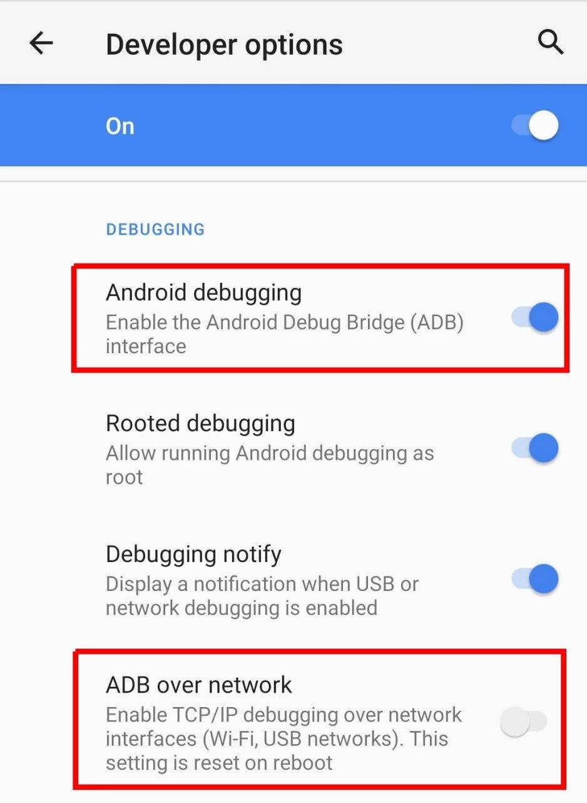

Android 10 and below
Tip
Using Android 11 or above? Android 11 guide is more convenient.
On Android 10 and earlier versions, ADB must be enabled in USB mode first. Then you can switch to network or TCP/IP mode. Using ADB in USB mode requires a computer.
Connecting the Android device to a PC and switching to TCP/IP mode is a one-time process. But you need to repeat this after every restart.
Note
Before proceeding further, make sure that you have enabled the Developer Options.
Some devices (usually custom ROMs) have ADB over Network or Wireless Debugging setting available in Developer Options:

In such cases, you don't need to connect the device to a PC. Just enable the ADB TCP/IP mode from within the Developer Options.
For other devices which only have ADB USB mode setting available in Developer Options, follow the instructions given below.
Enable TCP/IP¶
- Enable Android debugging / USB debugging in Developer Options.
- Connect the device to the PC with a USB cable.
-
On PC, open a terminal window (or command prompt on Windows) and run:
adb tcpip 5555where
5555is the port on which you want to start the ADB daemon (adbd) in TCP/IP mode. You'll use this port number later.
Tip
You must have adb executable available on your PC to run the above command. If not, here's the official download link.
Once these steps are completed, TCP/IP (wireless debugging) should be enabled.
Verification (Optional)¶
- Disconnect the USB cable from the device.
- Connect your device and PC to a common Wi-Fi network.
- Get the IP address of the device (usually in Wi-Fi settings or in Settings → About), say it's
192.168.1.1. -
On PC run:
adb connect 192.168.1.1 -
Run again:
adb shell id -u
It should print 2000 (or 0).
Connect the app to ADB¶
- Open the app and tap ADB Access.
- Enter the port
5555(from the previous section) and tap connect. - Allow USB Debugging if asked.
Note
You should leave the USB debugging enabled in Developer Options. Disabling the ADB will disconnect the app from ADB.